<img> as data-original-src.
Contents: Aluminum Bodies Vehicles; Basics; Antennas; Multiband Wonder Antennas; Mag Mounts; Glass Mounts; Other Antenna Mounts; Hole Saws; Transceiver Mounts; Coax Cable; SWR; Important Notes on AM RFI; Transceivers; Handhelds; A Note on APRS; Power Considerations; Power Amplifiers; SSB; Odds and Ends;
All aluminum bodied vehicles have special considerations with respect to installing amateur radio gear. This include a nominal lack of prerequisite bonding; special wiring considerations, especially grounding; and the need to use only aluminum mounting hardware including NMO mounts!
Here is a bulletin from Ford, outlining some of the considerations with respect to their aluminum vehicles. Other manufacturers have similar ones, as well as some specific to their vehicles. It is best to contact your dealer's service department, or the manufacturer's customer service staff, before installing amateur radio gear in your aluminum bodied vehicle.
Larsen and others offer NMO mounts which are compatible with aluminum bodied vehicles. In Larsen's case, the underside of the mount is aluminum, and the upper, screw-on brass part is insulated from the surface by an o-ring. Although the mounts need to be tight, they shouldn't be screwed too tight, or the brass ring will cut through the paint. If this occurs, galvanic corrosion will be the result. To help prevent this from happening, follow Larsen's installation recommendations.
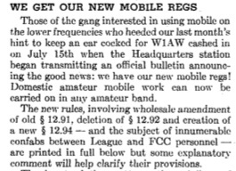
Starting about 1958, VHF repeater operation become a reality, particularly in southern California. These early repeaters were AM based, not FM as we have now. That situation soon changed to FM as knowledgeable amateurs started converting commercial low, and high-band FM radios to operate within the amateur bands
About 1970, the ARRL was instrumental in setting up band plans for 10 meters (the lowest FM band), 6 meters, 2 meters, and 70 centimeters (440 MHz.). Once this plan (actually a gentleman's agreement) was accepted by the FCC, VHF and UHF FM operation became ubiquitous, almost over night. Manufacturers like Drake, Kenwood, Icom, Heathkit, and even TenTec, introduced inexpensive VHF, and UHF transceivers.
Then about 1977, Kenwood introduced their TR2400 amateur handheld. While not the first handheld, it was the first with frequency synthesis and memory! The rest, as they say, is history! Just for the record, the Tempo S1 holds the honor of the first synthesized amateur handheld, but it didn't have memory, and was limited to ±600 kHz offsets. And, here we are today, with at least 15 companies making amateur VHF transceivers, so rich in features, it's hard to fathom them all.
Of late, VHF transceivers offer several forms of digital communication (as opposed to FM), with Icom's D-Star® being the most popular. Popular or not, the number of digital-capable repeaters is still lagging behind traditional FM ones, and the feature shouldn't be used as the main reason to purchase a specific model.
When it comes to installation of VHF gear, it isn't any different than HF operation. Proper Wiring, Safety, and antennas mounting are just as important. Sometimes more so, due to the increased incidence of RFI.
The roof of a vehicle is a very good place to mount a VHF antenna. However, all new vehicles come equipped with side curtain SRS devices, commonly called airbags. They're typically mounted along the edges of the headliner including the rear seat area if there is one. The wiring to these devices may be routed through any one (or more) of the roof pillars. Extra care is required when installing antennas in vehicles so equipped. If you are the least bit apprehensive about your installation, seek professional help from your dealer. In any case, you should have a copy of the service manual. Typical examples are in the $70 range, and easily pay for themselves when problems arise.
The most common mistake newcomers make is the selection of their mobile antenna. Apparently, the only consideration seems to be the amount of advertised gain; commonly referred to as playing the Gain Game. Trust me on this, there is more to VHF mobile antennas than their advertised gain figures! Like sturdiness, and weather resistance to name just two.
Danny Richardson, K6MHE, wrote an article for CQ a few years ago concerning the differences between 1/4, 1/2, and 5/8 wave VHF mobile antennas, replete with modeling graphs. It makes very interesting reading even if you don't know how to interpret the included graphs, because the text tells the story. In short, the mounting location and style, have more to do with performance, than the type of antenna used! A similar article appears on page 43, of the March 2012 issue of QST, as written by John Portune, W6NBC. And, Tom Rauch, W8JI, has a similar article on line.
Since we're dealing with FM (≈5 kHz or ≈2.5 kHz deviation), it should also be noted that doubling your ERP (effective radiated power) will not magically double your coverage distance. In fact, it takes an increase of nearly 10 times (i.e.: 50 watts to 500!) to double the distance covered, all else being equal. And even that isn't a given due to variances in surrounding terrain. If you don't understand why this is so, read this article on Fresnel Zones.
There is another aspect of the Gain Game. If you don't know what the gain figures are measured against, they mean absolutely nothing! One manufacturer's fine print states their gain is measured against the average HT antenna; in other words a rubber ducky. Sure puts new meaning in the term dBd!
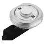
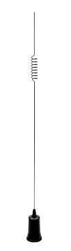
In urban areas where higher angles of radiation are preferred, you're typically better off with a lower gain antenna. If you're living in an suburban or rural area, gain antennas might have a slight edge. It all depends on the HAAT (height above average terrain) of the repeater being used with respect to the mobile station's HAAT. In Denver, Colorado and other mountainous areas, you're better off with a unity gain antenna (1/4 wave vertical) as the repeaters are much higher in elevation (in relation to the mobiles).
My personal V/U antenna is a Larsen NMO2/70 (see photo at right). It is currently the most popular dual band antenna sold. It is rugged (I've had mine on 7 different vehicles), it is rated at 200 watts dead carrier, and requires no tuning. At ≈$90 with the NMO mount, it is also reasonably priced.
Most of the import antennas are rated from 75 to 200 watts. Where these power ratings come from is a mystery. For example, an Icom V8000 with ≈75 watts out will burn up the average import antenna in due time, so you need to take their power ratings with a grain of salt! Even the venerable Larsen NMO2/70 will get warm during long transmissions at these power levels. I used to run 160+ watts out mobile to a Larsen NMO150. Due to the high power heating the whip, it was necessary to change the whip about every 6 to 8 months. Don't kid yourself; high output power levels at VHF requires a lot of special considerations (more on this later on).
There are at least two Pacific Rim companies making four band antennas designed to work with the single-port Yaesu® FT-8900 and others which cover the 10, 6 and 2 meters, and 70 cm FM bands. They mount on a modified SO239 mounting scheme. This mounting method negates the use of a through-hole mount due to water intrusion problems. Further, to reduce overall weight their loading coils are minuscule in size. As a result, their sturdiness and efficiency are suspect. Their power handling capabilities are also suspect, as owners often report burn out problems with the base matching coils. Unfortunately, there isn't any low-cost alternative, other than using 2 or 3 antennas and 2 or 3 diplexers to cover the same frequency spread.
This points out an interesting fact. The FT-8900 has a street price of $500. For the same money, you can buy a good used FT-857D, an Icom IC-706MkIIg, or an Icom IC-7000. These transceivers have separate HF and VHF ports making antenna choices easier. That's not the main drawing card, however. All of these models are all-band, and all-mode too! While 6 and 10 meter FM might be fun, 6 and 10 meter SSB (see below) is even more so. And, when you upgrade your Tech license, you'll be ready to go! If you haven't purchased your FT-8900, you might want to give your purchase more thought.
Mag mounts were never intended to be used for permanent installations, yet that's what far too many folks do. The usual excuse is, they don't want to drill a hole, and thus damage their precious new vehicle. The truth is, a mag mount can cause more damage than a hole. They do in fact, scratch the surface they're stuck to, no matter what precautions are taken. The major reason is, the magnets collect all manner of metallic brake dust, and other pollutants. Whether you R&R the antenna regularly, or leave it in place, day-to-day travel causes them to move around, and all of that attracted grit acts just like sand paper thus marring the surface. The resulting damage is often called mooning, after the circular marks left behind. And just wait until you hit something hard and the antenna dislodges. Personally, I won't take the chance, and neither should you! 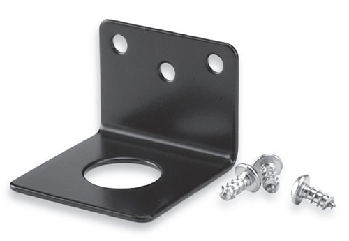
Here's another interesting fact about mag mounts. The amount of "sticking" force is directly related to the thickness of the steel. When demonstrated in a dealer's showroom, they're always stuck to a much thicker piece of steel than the sheet metal on a vehicle. Adding insult, the outer surfaces of some higher priced vehicles use a composite consisting of layers of steel and plastic, or of aluminum. In these cases, mag mounts will not stick at all.
If you're looking for an alternative to a mag mount, then consider an angle bracket like the Larsen one shown at right. While they do require three holes for their sheet metal screws, the resulting holes are below the surface, and as easily filled with body putty (dumdum). If they have a drawback, it is the lack of seam clearance in late model vehicles. Incidentally, most NMO cable kits have unsealed ends. When used with an L bracket exposed to the elements, the coax should be weatherproofed with a good quality, non-acidic silicon sealer. By the way, coax cable should never be run under or over door and trunk seals, for very obvious reasons. This fact relegates L brackets to the hood seam mounting only.
However you justify using a mag mount, there is one problem with them that cannot be justified, and that's common mode current, no matter how many magnets the mount has! RF current must return to its source. The only path a mag mount has is through its capacitive coupling, which is very lossy. Whether the resulting common mode causes you any known problems is perhaps moot, because sometimes the problems go unseen. For example, the OBDII data can become corrupted, and you'll never know until you get your vehicle serviced under warranty!
Virtually every vehicle made today uses passivated glass (sometimes called solar glass). Embedded in the glass are metallic particles which serve several purposes. First, they block most UV rays which lessens fading of the interior trim pieces, and they reduce the heat load. Less air conditioning, better fuel mileage. To a lessor degree, the metallic particles act as RF shield for the digital electronics inside the vehicle. The filtered wavelengths include those used by amateurs, cellular phones, automated toll readers, radar detectors, and GPS devices.
Glass mount antennas rely on capacitive coupling. Both passivation, and the thickness of the glass have an effect on the amount of absorption at the various wavelengths. These facts make glass mount antennas nearly worthless. Worse, glass mount antennas do not have a ground plane under them. This causes the return currents to flow on the outside of the coax (common mode), thus the coax does the majority of the radiation. Whether or not any given installation can make contacts using a glass mount antenna is moot. The fact remains, Larsen, the largest maker of glass mounts, doesn't recommend mounting them on passivated glass. The best advice I can give anyone about using glass mount antennas is this; don't!

 Antenna mounts are another area of contention. Far too many folks just won't drill a hole to properly mount their VHF antenna, much less their HF one. One of the more popular solutions to not drilling a hole, is the Diamond K400. Here's something to consider. The mount in its various configurations, comes equipped with a 2 meter (about 6.5 feet) long piece of what appears to be RG174. That short length adds nearly 2 dB of loss on 2 meters, and 6 dB of loss on 70 centimeters (440)! So much for all that advertised gain by the import antenna manufacturers!
Antenna mounts are another area of contention. Far too many folks just won't drill a hole to properly mount their VHF antenna, much less their HF one. One of the more popular solutions to not drilling a hole, is the Diamond K400. Here's something to consider. The mount in its various configurations, comes equipped with a 2 meter (about 6.5 feet) long piece of what appears to be RG174. That short length adds nearly 2 dB of loss on 2 meters, and 6 dB of loss on 70 centimeters (440)! So much for all that advertised gain by the import antenna manufacturers!
If that wasn't enough, every time you open or close the door or trunk the mount is attached to, the grip loosens with predictable results. And that isn't all! Click on the right photo to enlarge it. The damage you see is all too often the result of using a lip mount. I can assure you, this sort of damage is much more costly to repair, than a simple, 3/4 inch hole.
 By far the most longest-lasting V/U mount out there is the NMO (new Motorola, shown above right) series. With few exceptions every manufacturer has at least one model incorporating it. Virtually every police department in the country uses this mount, and for good reason. Yes, it does require that a 3/4" hole be drilled. But if you take your time to do it correctly, it will never leak even when the antenna has been removed. When trade in time comes no one will care. Just tell them it is for a cell phone.
By far the most longest-lasting V/U mount out there is the NMO (new Motorola, shown above right) series. With few exceptions every manufacturer has at least one model incorporating it. Virtually every police department in the country uses this mount, and for good reason. Yes, it does require that a 3/4" hole be drilled. But if you take your time to do it correctly, it will never leak even when the antenna has been removed. When trade in time comes no one will care. Just tell them it is for a cell phone.
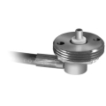
The NMO mount shown at left is from Breedlove. One can't argue about its sturdiness, even when mounted in thin sheet metal. It is interesting in that the coax attaches via spade lugs, making remounting easier. However, at UHF there will be a slight impedance bump, but one that shouldn't be significant under 500 MHz. Just keep the lead length as short as you can.
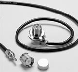 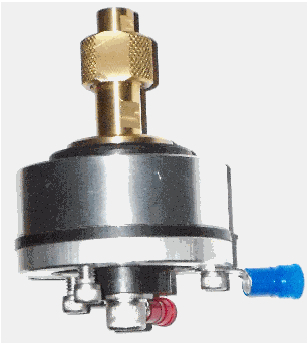
Roof mounting of V/U antennas is always best, but on vehicles with sun roofs and/or side curtain SRS devices, it can be a problem. Trunk mounting is second best, but if your vehicle doesn't have a trunk, the front fenders or cowl area are alternatives.
If your antenna uses a standard 3/8x24 thread, and you have a flat mounting surface (roof or trunk lid), the Breedlove puck mount shown at right may be the answer. It obviously requires drilling holes, and about 1 inch of under-panel clearance. Properly mounted, it can easily hold a Hustler® 2 meter collinear antenna.
Drilling a 3/4 inch hole for an NMO or similar mount should be well planned before getting out your cordless drill! This is especially important for roof mounted antennas, as newer model vehicles have minimal clearance between the headliner and the roof. Sunroofs and rollover protection ribs add another level of concern as does wiring for airbags, dome lights, and entertainment devices. When in doubt, seek professional help from your vehicle dealer or local two-way radio shop. If you're still intent to doing the job yourself, at least buy a service and/or body manual for your specific vehicle.
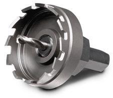
For trunk lids, a Unibit stepped drill will to the job nicely, if you go slow! A chassis punch works too. However, those 3/4 inch electrical conduit punches available from your local hardware store should not be used to punch a hole for an NMO mount—they leave a hole 1/8 inch too large!
The securing ring of an NMO mount has a 15/16 inch shoulder used to tighten it down. The bottom portion (with the coax attached) has two 1/16 inch diameter holes drilled into it. Most mounts are shipped with a bent wire tool used to keep the mount from turning as the securing ring is tightened. If yours didn't come with one, use extra caution to make sure the mount doesn't turn. In some cases, it is necessary to remove a small area of insulation from the underside of the roof panel, to assure a good electrical connection to the sheet metal.
 Just about every kind of transceiver mount you can imagine, is made commercially. The Installation article contains links, and descriptions to many of them. Decent quality mounts are not inexpensive, and for good reason. They have to be sturdily made, and designed to correctly fit the many different transceivers on the market.
Just about every kind of transceiver mount you can imagine, is made commercially. The Installation article contains links, and descriptions to many of them. Decent quality mounts are not inexpensive, and for good reason. They have to be sturdily made, and designed to correctly fit the many different transceivers on the market.
Some might ask why they need a different mount, when their radio already came with one. Simply looking at the supplied mount will give you the answer. They're made to attach to the head and/or body of the transceiver, but no provisions are made to attach it inside the vehicle. Remembering that the radio's controls needs to be easily reached, yet out of the way of SRS devices, and vehicle controls, it is easy to see why so many amateurs opt for a custom mount. It pays to be safe than sorry.
Most V/U antennas come with RG58, solid dielectric coax. At V/U frequencies long lengths of it are indeed lossy. At the lengths we deal with in mobile applications, the loss isn't significant. The few tenths of a dB savings RG8 would give over smaller coax, will not suddenly make your signal heard an extra 50 miles. However, coax cable smaller than RG58 (RG174 is an example), should be avoided, especially at UHF. It is interesting to note (as alluded to above), that several Pacific rim manufacturers hype their gain figures, and then ship their antennas with mounts equipped with RG174.
Some antenna manufacturers' installation kits contain RG58/U, which has a solid conductor center. If yours was, replace it a stranded version or you'll end up with an open circuit, sooner than later.
Foam insulated coax, RG8X for example, requires special care. Remembering that the interior of a closed vehicle can exceed 160°F when parked in summer heat, the bend radius shouldn't be less than 3 inches to minimize migration of the center conductor under these extreme conditions.
Lastly, take time to install your connectors properly. An open antenna circuit is just as bad as a shorted one, and improper connector installation can cause both scenarios.
Setting the Standing Wave Ratio is an important installation procedure, but not one to fret over afterwards. Unlike the HF bands, most VHF antennas will cover the whole band segment without the need to retune. That is to say, the SWR of an NMO2/70 will be low across the FM portion of the respective bands. Thus the need for an in-line SWR bridge is superfluous. If you're going to operate on the SSB portion, you shouldn't be using a vertical antenna anyway.
Let me make an important point here. If your mobile vertical antenna will cover all 4 MHz of the 2 meter band (or 70 cm) with a low SWR, you need a better antenna and/or installation! This statement is pointed directly at the cheaply made import antennas. The reason for their bandwidth is simply because their overall losses are high.
Commercial-grade FM transceivers are nearly impervious to amplitude modulated RFI, such as ignition pulses. Unfortunately, this isn't the case for almost all amateur transceivers, no matter the make or model! Part of the issue is their wide-band receive capability, a standard feature on most models. Improper wiring and antenna mounting often exacerbate the issue.
As with HF installations, common mode chokes, and hood and exhaust bonding, are often necessary to quell the level of AM RFI. It is important to remember, that the detection of AM RFI is a square-law function—reduce the generated level by 3 dB, and the detected level drops by 6 dB, with a corresponding increase in SNR.
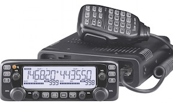 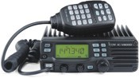
As mentioned above, never buy a handheld as a first (or only) radio. Most are FM only, and even if they have AM or SSB capabilities, they are severely limited in these modes. All the extra features like weather alert, aircraft frequency coverage, and extended receive are superfluous to the majority of the users.
Seemingly, a cross-band repeat function is a must-have feature, but one which soon loses its appeal when you find your battery dead! While the feature does have its uses, basing your purchase solely on its availability isn't wise.
If at all possible, go to your nearest dealer and play with the various models. Then choose the one which meets your specific needs, and not someone else's.
Dual band units seemingly have replaced most mono band ones. Some are remotable, some not, and the power output runs from 10 watts to well over 75 watts. Most are FM only, but a lot of them are multi-mode (SSB, AM, etc.). There really isn't much difference in specs between any of them except in the eyes of the beholder. It is the ease of operation which is most important, especially when they are operated mobile. Keep this in mind when making your choice.
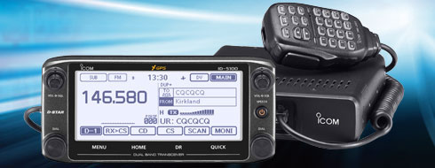
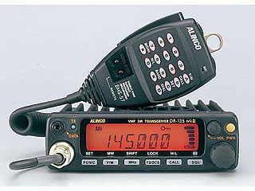
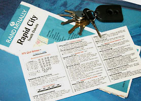
Stick with the factory microphone! Most all of them are semi noise canceling, and the internal deviation and audio adjustments are tailored for them. Replacing it with a power mic is asking for trouble. And please, if you just can't help yourself and replace it anyway, don't use one with a roger-beep. On the amateur bands, this is a sure sign of a lid and will only bring negative criticism.
Some factory-supplied microphones are capable of more than just sending TouchTones®. Add up and down buttons, function and band buttons, a myriad of other features, and things get dicey. If you have trouble figuring it out in the store before you buy it, think about the trouble you'll have while you're underway? In this case, simple is better.
One attribute missing (thankfully) in most V/U mobile transceivers is VOX (voice operated transmit). If your transceiver has it, please don't use it mobile. Just about the time you get used to it, some road-raged knuckle head driver will elicit a vile comment, and all of your friendly repeater users will know exactly what you're thinking.
Sooner or later, everyone owns a handheld. They're often called walkie-talkies, and by a few less affable names. They range in price from as low as $39, to as high as $700. Most are FM only, but a few cover AM and SSB, at least in receive mode. There are even some capable of receiving video. Band coverage from one band to multiple bands, and extends from 29 MHz to 1,296 MHz. Output power ranging from 1 to as much as 8 watts.
The most unfortunate issue with handhelds, is far too many amateurs select one as an only transceiver. Since most are limited to FM, and typically 2 meters and 70 cm, it isn't difficult to understand the limitations they impose on a new amateur operator. Adding insult to this scenario, is the fact that mobile mounting brackets are nonexistent. And, almost all of them require a special power adapter to power them from an accessory socket, an already limiting power source.
To safely operate a handheld mobile, an external microphone is a basic requirement, as is some sort of external amplification for the audio output. While a headset may be used, some jurisdictions don't allow their use. So for mobile use, they leave a lot to be desired.
If you just have to have one, do your homework. Most of the late-model units from China are limited in their scope, and difficult to program. The best advice is to go to your local dealer, and play with the offerings, and pick the one that best suits your needs.
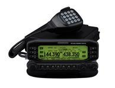
Automatic Position Reporting Systems are all the rage, and there are several web sites devoted to it, including this one. The basic requirements are GPS (Global Positioning System) receiver, although some are built in, and (typically) a dedicated transmitter to uplink the data periodically. Ground stations all over the country (planet) receive the data, and relay it to the various web sites via the internet. The Kenwood TM-D710A is a popular radio for such activity. By the way, Icom bias aside, the D710A is about the best dual bander for the money. If you have the earlier model (D700A), and want the capabilities of the D710A, then talk to your dealer first! Why? You don't have to buy an all-new radio, just the head, and you save a bundle.The big three all have at least one model with an GPS receiver built in, and Yaesu even has a hand held with a GPS option. Whether you use a stand-alone GPS or one built in, APRS has never been easier. Fact is, there are so many variations of the theme, it would take a dedicated web site just to cover the basics. If you really want someone to know where you are at all times, the APRS is for you. I suggest you do a Google search, but be prepared, you'll get nearly 4 million hits!
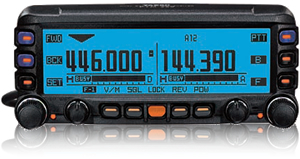
FM transceivers present an unique power requirement. For example, a 75 watt output unit like the Icom V8000 draws 15 amps on transmit which is about 6 or 7 amps more than the average current a 100 watt SSB transceiver draws. Obviously wiring size is important, yet the V8000 power cord as supplied by Icom is slightly smaller than size 10 awg. This presents several potential problems which we'll explore shortly.
While on the subject of power, keep one important aspect in mind. All major manufacturers rate their power output when the transceiver is supplied with a nominal 13.8 VDC. In the real world, mobile power can be anything from 11 VDC to about 14.2 VDC. If you measure the power out of the aforementioned V8000 when the supplied voltage is about 12 VDC, the power out will only be about 50 watts, perhaps less! This points out the need for adequate wiring, and in all honesty, the factory cable may be inadequate for all but the shortest runs. Make sure you read the Wiring article as it contains several other important considerations including proper fusing.
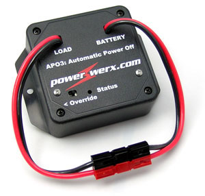
One power-related drawback common to almost every VHF transceiver, is there's no auto-off feature. This drives some folks to use existing (switched) vehicle wiring, and that is always a bad idea. Or, they resort to using relays, which is also a bad idea. There is a solution.
The PowerWerx APO3 is more than just a timed (0, 5, 10, 20 minutes), auto off device. There are four pre-programmed voltages (11.8, 12.1, 12.7, 13.05 volts) settings. Properly programmed, the APO3 will turn off, and on, your radio just by monitoring the battery voltage!
 It can handle up to 30 amps making it compatible with almost any radio. It comes equipped with Anderson Powerpole connectors, making wiring simple, and quick! At $60 (MSRP) it is also affordable. Visit their web site for more information.
It can handle up to 30 amps making it compatible with almost any radio. It comes equipped with Anderson Powerpole connectors, making wiring simple, and quick! At $60 (MSRP) it is also affordable. Visit their web site for more information.
West Mountain Radio makes a similar device, called the PWRguard® shown at right. It contains a 40 amp FET, controlled by circuitry which shuts off if the input voltage drops below 11.5 VDC, or goes over 15 VDC. Its application in a portable application is obvious, but can be useful in a mobile installation as well.
It should be noted that most mobile transceivers use electronic on/off switching. If you remove the power when the transceiver is on, and then reapply the power, they will not come back on without pushing the power button.
Sooner or later, almost everyone considers buying an amplifier. But before you plunk down your hard-earned cash, there are a few things to consider. First and foremost is safety! As we go higher in frequency and power, the safe RF exposure distance (to the antenna) increases. If you were using a 160+ watt power amplifier on two meters through a roof mounted antenna, you typically can feel the heat on the side of your face from 5 feet away. While no scientific study has confirmed the dangers, if you can feel the heat it can't be doing you any good! Doubly so if you or one of your friends has a heart pacemaker or similar device.
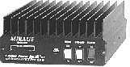
If your main use is SSB, it is best to use relay control rather than the built in RF switching. RF switching the units will eventually cause the preamp to fail, and most likely the transfer relay as well. Anyone who has used one of these amps, knows these are the two most common failure modes.
Mirage amps are very popular due in part to their lost cost versus power out. You see a number of these on the used market as a result. Personally, I'd steer clear of the early models as some of the final transistors used in them are no longer available and/or expensive. So, don't buy a used one from anyone without actually seeing it work through a wattmeter into a dummy load.
Later production models are wired for compatibility with their RC-1 remote control. MFJ publishes instructions on how to modify early models to use the RC-1. If you purchase one of these field-modified units, and you do not have the RC-1, the amp will not work even though the on light is lit. It is easy to rewire the amp to original specs, or to build your own RC-1. Schematics are not included in on line documents, but you can email Mirage and request one.
Mirage amps, and most other brands, have much lower driver requirements than base amps. An Icom IC-706 will easily over drive any current commercial V/U mobile amp. What's more, most mobile transceivers exhibit a power over shoot on key down. This short duration spike can be as much as 150 watts, even if the transceiver is set for a low SSB output level. Thus, a relay control line is a must as outlined above.
The Mirage B-XX50 series has been discontinued. This is probably a godsend for the uninitiated! The B-5030 puts out 300+ watts with 50 watts of drive. Even a Larsen NMO2/70 will eventually melt under this amount of RF. Using one mobile is a mixed bag of tricks too, as the current draw is nearly 50 amps, plus that required to power the transceiver.
If you do repair work on any of these VHF amps, make sure you secure the cover in place before you attempt to use it! The lid acts as an RF shield, and must be secure screwed down. This caveat cannot be over emphasized! Remember, at VHF frequencies, even a small opening in a seam can act as a slot radiator which can cause irreparable eye damage! If you're the least bit queasy, leave repairs to a professional!
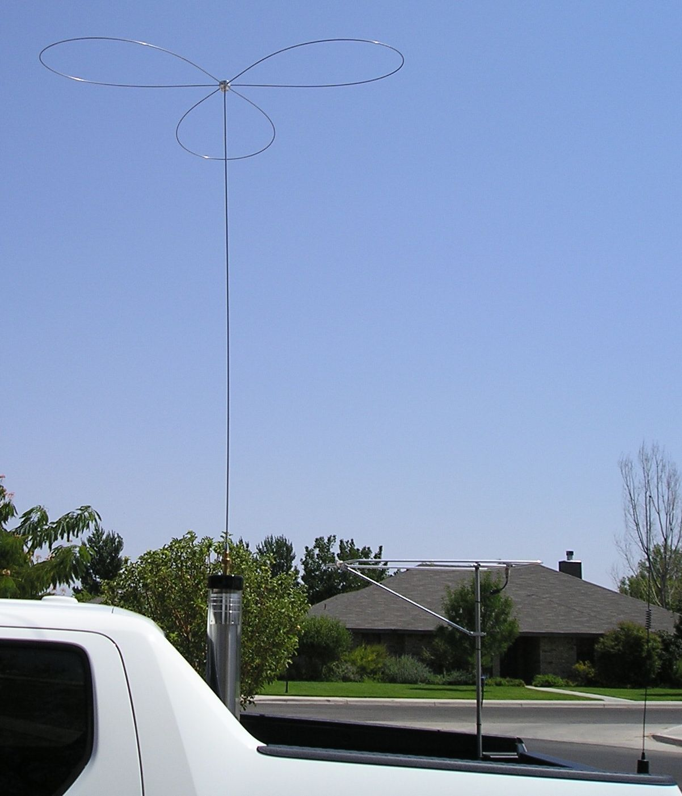
It is not uncommon to work over distances of 100 miles with just 50 watts, and a vertical. Add the aforementioned 160 watt amplifier by Mirage, a horizontal loop antenna, and 200 miles isn't uncommon in open country. Stack a pair of halos, and you have a formidable roamer! If you're interested in roamer operation, I suggest you look into one of the publications the ARRL has on this type of VHF operation.
The right photo is my Honda Ridgeline. The HF antenna is a Scorpion 680, the 6 meter halo is an M-Squared, and the V/U antennas are Larsen NMO2/70BKs (one not shown attached to an Icom IC-208H). The combination gives me all-mode operation from 80 meters through 70 cm.
Some vehicle computer systems use a color burst crystal as an oscillator (3.579545 MHz). The 41st harmonic is 146.76134 MHz, which causes problems with the 146.16/76 repeater pair. However, component tolerances can cause the harmonic to be anyplace between about 146.70 MHz, to as high as 146.80 MHz. If you live in an area that uses this repeater pair, be advised that automobile manufacturers will not address the issue. See the Digital Electronics article for more data.
There are still a few autopatches dotted throughout the country, but with the popularity of cell phones, their days are numbered. Nonetheless, most V/U transceivers have touch tone microphones as standard equipment. Nowadays, they are most often used to access mega linked repeaters. It is also a prerequisite for using VoIP in its various forms.
Speaking of repeaters. The Repeater Builders web site offers a lot of information of interest to any VHF operator. Mike Morris, WA6ILQ, and the group have assembled quite a data base covering both GE and Motorola repeaters, and all of the accessories which go with them. If you're into VHF operation, it is a great resource.
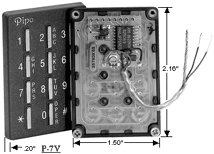
Most of the repeater and linking equipment are owned by individuals with amateur radio clubs a close second. All of this equipment, and the time and expense needed to keep them running is not an inexpensive proposition. If you use any facility on a regular basis, you need to help support it. When I was traveling extensively I paid dues to five different clubs so I could use their repeaters.
There are times you shouldn't use any of your mobile facilities. If the distraction is too great with respect to traffic, passengers, or the weather, hang up the microphone and pay attention to your driving.
{kind=link}
{kind=link}
{kind=link}
{kind=link}
{kind=link}
{kind=link}
{kind=link}
{kind=link}
{kind=link}
{kind=link}
{kind=link}
{kind=link}
{kind=link}
{kind=link}
{kind=link}
{kind=link}
{kind=link}
{kind=link}